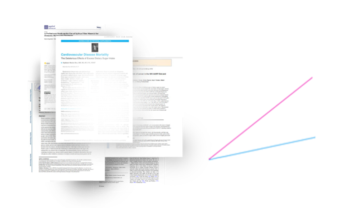
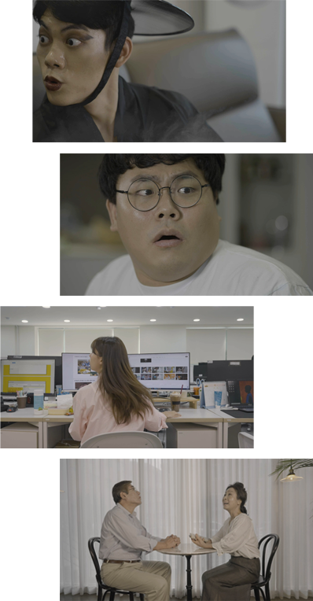
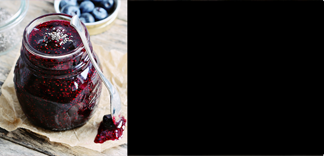

나는 나쁜당이 싫어요!- 승복오빠
자연지애
#훅가고싶니?
#설탕을끊자
COMMENTARY
‘설탕은 악이다’
문제적 캠페인의 시작
한국인이 한 해 먹는 설탕이 *WHO 섭취권장량의
약 3배라는 사실, 알고 계셨나요?
담배는 끊으라고 말하면서 설탕엔 왜 침묵했던 걸까요?
대한민국 국민들을 설탕으로부터 지키기 위해
우리는 과감히 설탕을끊자 캠페인을 시작합니다.
*출처: Guideline: sugars intake for adults and children, WHO
국민건강영양조사
왜 설탕을 끊어야 하는지
이미 많은 논문들이 증명하고 있습니다
설탕 관련
SCI급 논문
200건 이상
출처: RISS 해외학술논문 검색 결과
설탕 VS 스테비아
혈당수치 비교
TEST
이래도
계속 드시겠습니까
“단맛은 살찌지 않아요 당이 살찌죠”
눈꽃스테비아는 허브에서 추출한 천연 감미료로
당이 없어 가열해도 카라멜화가 되지 않습니다.
설탕을 끊기 전 눈으로 직접 확인 해보세요.
설탕 vs 눈꽃스테비아
가열비교
Dr. Helke / 닥터 헬케
AWARD
네이버쇼핑 1위
쿠팡 1위
국민 스테비아‘눈꽃’
누적판매 17만개!
이미 많은 분들이 선택하고 극찬한
국민 스테비아는 눈꽃스테비아입니다.
기준: 네이버쇼핑 2021년9월 쿠팡 2021년5월 누적판매 2021년08월
16**********
와 혁명입니다. 키톤식에 도움될까 구매했어요.
재구매 예정이에요.
tn******
진작에 바꿀걸 이제야 바꾼게 넘 후회될 정도로 맘에 들어요~~
sa*******
엄마가 너무 좋아하셔서 재구매합니다.
당도 안 오르고 넘 좋대요
38*******
설탕보다 단맛이 떨어질까 걱정했는데 똑 같은 비율로
써도 단맛이 충분해서 좋아요.
네이퍼페이 구매자
막 넣고 죄책감 없이 퍼먹고 있음.
SYNOPSIS
“훅 가고 싶니?”
단맛에 중독된 사람들로
저승은 포화상태가 되고,
설탕에서 벗어나지 못하는 인간들에게
저승사자가 나타나서는
눈꽃스테비아를 주고 사라지는데…
설탕에 대한 불편한 진실을 리얼하게 세상에 드러낸
하이퍼리얼리즘 옴니버스 이야기.

EPISODE. 01
중독된 결말
SYNOPSIS
코로나로 갈 곳을 잃은 남자는 한순간에 설탕에 빠지고
결국 자제심을 잃고 저승사자를 만나게 되는데…
EPISODE. 02
딸아 미안해
SYNOPSIS
행복할 줄 알았던 딸의 미래에 위기가 찾아오고
엄마의 선택은 결국 저승사자를 불러들이는데…
EPISODE. 03
간식의 함정
SYNOPSIS
기분전환으로 당충전 하던 여자에게 죄어오는
끔찍한 함정의 끝에 저승사자가 기다리고 있는데…
EPISODE. 04
위험한 유혹
SYNOPSIS
“그게 사랑인 줄 알았어요.” 남편에게 설탕을 권했던
부인의 변명에 드디어 저승사자가 모습을 드러내는데…
EPISODE. 05
눈꽃맨 비기닝
SYNOPSIS
저승사자의 경고에도 세상은 점점 당분에 중독되고,
인간을 구원하기 위해 스테비아 행성에서 날라온
눈꽃맨의 위대한 여정이 시작된다.

BINGE WATCH
설탕으로 훅 가는
충격영상 정주행하기
저승사자는 왜 그들을 찾아 갔나?
하이퍼리얼리즘 에피소드 5가지.
REVIEW
눈꽃스테비아로
구원받은 고객들의 간증
다만 당에서 구하소서- 다만당
설탕은 노답
나는 노당- 눈꽃맨
스포주의
범인은 바로 설탕!- 백설탄
벌써 5번째 재구매-평생예약고객
덕분에 실시간 감량중-눈꽃미스진
TASTE
눈꽃팬이라면 환장할
추천메뉴 시리즈
설탕 한 톨 넣지 않아도 단맛이 산다!
죽어가던 요리도 살려내는
눈꽃스테비아 메뉴를 취향대로 선택하세요.
RECOMMEND. 01
무설탕 떡볶이
TIP.
떡볶이 단맛은 이제 설탕 대신
눈꽃스테비아로 맞추세요.
RECOMMEND. 02
NO설탕 불고기
TIP.
불고기도 눈꽃스테비아 하나면
설탕 없이 달달하게 즐길 수 있어요.
RECOMMEND. 03
눈꽃 도너츠
TIP.
마음껏 달달하게 먹어도 죄책감 없이
맛있게 당충전 하세요.

RECOMMEND. 04
무가당 과일쨈
TIP.
우리 가족 먹을 쨈인데 아직도 설탕?
눈꽃스테비아로 건강하게 챙기세요.
RECOMMEND. 05
슈가프리 커피
TIP.
달콤한 카페인 수혈이 필요한 날도
설탕 대신 눈꽃스테비아로 채우세요.
EVENT
설탕 가면
눈꽃 온다
설탕과 이별한 재밌는 인증샷을
SNS에 해시태그와 올려주시면
1:1 눈꽃스테비아를 보내 드려요
#설탕가면눈꽃온다 #눈꽃스테비아
참여방법
인스타그램 & 페이스북 해시태그와 인증샷 업로드
추첨상품 : 눈꽃스테비아 1통 400g / 100명
기간 : 2021.10.11-10.30 당첨자 개별 공지
슈퍼스타 오날두
긴급 기자회견 영상보기